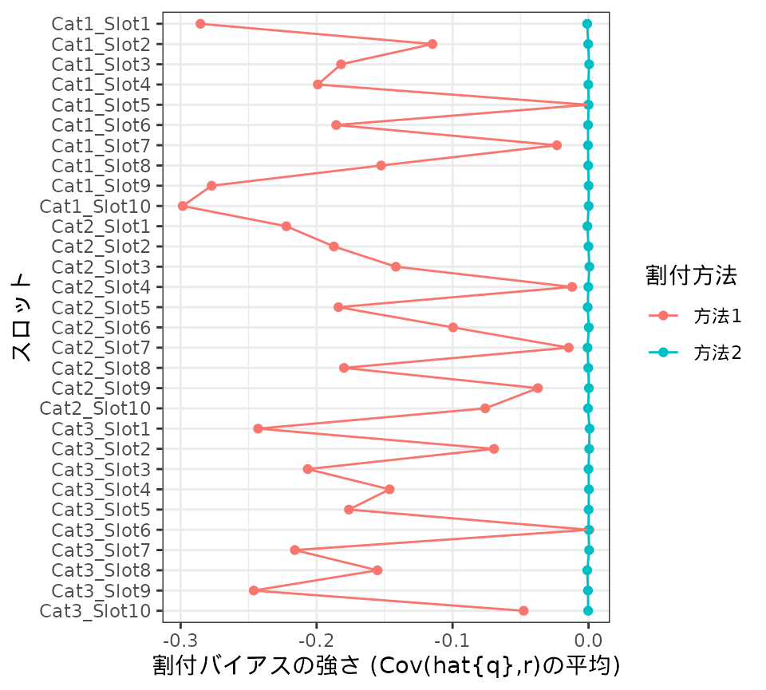

3. How to estimate bias
Shigeru ONO
2024-05-22
vignette_bias.Rmdここでは、rSurveyAssignパッケージを使った割付バイアスの評価について
説明します。
rSurveyAssignパッケージの背後にある考え方については、 “rSurveyAssign: tools for simulation of assignment
in web surveys”を参照して下さい。
調査手続きを設計している際には、これから行う調査における割付バイアスの大きさについて、ある程度の
目安をつけたくなります。しかし、割付バイアスの強さをかんたんに知ることはできません。
そこでrSurveyAssignパッケージは、割付バイアスの強さを評価する機能を提供しています。
1. 割付バイアスの定義と性質
1.1 割付バイアスの定義
割付バイアスとは、ひとことでいえば、割付に起因するバイアスのことです。以下では議論を進めやすくするために、 割付バイアスについてもっと明確に定義しておきましょう。
あるカテゴリないしスロットAについて考えます。ある調査を行ったとき、調査対象者(調査に参加した人)のなかにAに割付可能であった対象者が\(N\)人いたとします。仮に、その人々すべてからAについての設問への回答を得たとしましょう。 そのとき対象者\(i(=1,\ldots, N)\)の回答から得られる関心ある値を\(x_i\)とし、その平均を\[\bar{x}_P = \frac{1}{N} \sum_{i=1}^N x_i\] とします。添字\(P\)は割付可能な調査対象者を表しています。
以下では、私たちの目的は\(\bar{x}_P\)を推測することだと考えます。通常の調査では、推測したいのは\(\bar{x}_P\)ではなく、その背後にある対象母集団における回答の平均や、回答誤差をも取り除いた真の態度・意見の平均だと考えるのが普通です。しかし、ここではある調査のなかでの割付バイアスについて議論しているので、推測の対象は\(\bar{x}_P\)だと考えることにします。
さて、調査コストや回答負荷を低減するため、Aに割付可能であった\(N\)人の対象者すべてからAについての回答を得るのではなく、そのなかの\(n\)人をAに割りつけ、この人たちのみからAについての回答を得たとします。対象者\(i\)がAに割り付けられたとき1, 割り付けられなかったとき0になる変数を\(I_i\)とします。
Aに割り付けられた\(n\)人の対象者から得られる\(x_i\)の平均は、以下のように表現できます。添字\(S\)は割り付けられた調査対象者を表しています。 \[ \bar{x}_S = \frac{1}{n} \sum_{i=1}^N I_i x_i \]
以下では割付バイアスを、割り付けられた対象者における関心ある変数の平均の期待値と、割付可能なすべての対象者における関心ある変数の平均とのずれ \(E[\bar{x}_S] - \bar{x}_P\) であると定義します。
1.2 割付バイアスの性質
割付バイアスはどのような性質を持つでしょうか。
以下では、対象者の回答\(x_i\)は定数であり、Aへの割付の有無\(I_i\)は確率変数であると考えます。また、便宜的に、割り付けられた調査対象者数\(n\)、割付可能な調査対象者数\(N\)はともに定数であるとみなします。
対象者\(i\)がAに割り付けられる確率を\(p_i = E[I_i]\)とし、\(q_i = \frac{N}{n} p_i\)とすると、 割付バイアスは以下のように表現できます。
\[E[\bar{x}_S] - \bar{x}_P = \frac{1}{N} \sum_{i=1}^N (q_i - \bar{q}_P)(x_i - \bar{x}_P)\] つまり、割付バイアスとは、「割付確率を割付可能対象者を通じて平均が1になるようにスケーリングした値」と、関心ある変数との、割付可能対象者を通じた共分散です。いいかえれば、割付バイアスは、関心ある変数\(x_i\)と割付確率\(p_i\)の間に関連があるときに生じるバイアスです。
1.3 割付確率の推定
あるカテゴリ・スロットへの回答における割付バイアスの大きさについて推測するためには、 そのカテゴリ・スロットに割付可能であった対象者について割付確率\(p_i\)を推測する必要があります。
このパッケージでは、仮想的な母集団を用いたシミュレーションを通じて割付確率を推定します。 このシミュレーションは以下の手順に従います。
- 母集団データから対象者を抽出し、カテゴリ・スロットへの割付を行う(割付試行)。
- ある割付試行で得た調査データから無作為復元抽出によって仮想的な調査データを再生成し、カテゴリ・スロットへの割付をやりなおす(再割付試行)。
- 再割付試行を繰り返し、各カテゴリ・スロットについて、それに割付可能である個々の対象者\(i\)の割付確率の推定値\(\hat{p}_i\)、ならびに推定量の分散の推定値\(\hat{V}_i\)を得る。 “How to compute survey weights”を参照して下さい。
- 以上の割付試行を複数回繰り返す。
1.4 割付バイアスを評価するための指標
rSurveyAssignパッケージは、 推定された\(p_i\), \(V_i\)に基づいて、これから行う調査が持つであろう割付バイアスを評価します。
本項では、評価の際に用いる指標について説明します。
割付確率の変動係数の推定値\(\hat{\mathrm{CV}}(p)\)
あるカテゴリないしスロットにおいて生じる割付バイアスとは、割付可能対象者を通じた「平均が1になるようにスケーリングした割付確率」\(q_i = p_i / \bar{p}_P\)と、関心ある変数\(x_i\)との共分散です。関心ある変数を特定しないと、割付バイアスの大きさもわからないわけです。
しかし、\(q_i\)のばらつきが小さければ、いかなる変数においても割付バイアスは小さいといえます。関心ある変数を特定できない状況では、\(q_i\)の標準偏差を割付バイアスの大きさの目安として捉えることができます。
そこでこのパッケージでは、割付確率の変動係数の推定値\(\hat{\mathrm{CV}}(p)\)を、割付バイアスの大きさの指標のひとつとして提供します。
rSurveyAssignパッケージはこの値を以下のように求めています。割付可能対象者\(i(=1,...,N)\)の割付確率の推定値を\(\hat{p}_i\)とします。 \[ \bar{\hat{p}}_P = \frac{1}{N} \sum_{i=1}^N
\hat{p}_i \] \[ \mathrm{CV}(\hat{p}) =
\frac{1}{\bar{\hat{p}}_P} \times \sqrt{ \frac{1}{N} \sum_{i=1}^N
(\hat{p}_i - \bar{\hat{p}}_P)^2 } \] \[ \hat{\mathrm{CV}}(p) = \sqrt{
(\mathrm{CV}(\hat{p}))^2 - \frac{\frac{1}{N} \sum_{i=1}^N
\hat{V}_i}{\bar{\hat{p}}_P^2}} \]
そのほかの指標
なお、その他の指標として以下も出力されます。
- 割付確率の推定値の変動係数 \(\mathrm{CV}(\hat{p})\)。上記を参照。
- デザイン効果の推定値 \(\hat{\mathrm{Deff}}\)
- 実質標本サイズの推定値 \(\hat{\mathrm{ESS}}\)
- スケーリングした割付確率の推定値と割付可能レシオ(全カテゴリないしスロットに占める割付可能カテゴリないしスロットの割合)との共分散の推定値 \(\mathrm{Cov}(\hat{q}, r)\)
- 割付可能対象者における割付可能レシオの平均
- 割り付けられた対象者における割付可能レシオの平均
\(\hat{\mathrm{Deff}}, \hat{\mathrm{ESS}}\)の定義は以下の通りです。
\[ \hat{w}_i = 1 / \hat{p}_i\] \[ \bar{\hat{w}}_S = \frac{1}{n} \sum_{i=1}^n \hat{w}_i\] \[ \hat{\mathrm{Deff}} = 1 + \left( \frac{1}{\bar{\hat{w}}_S^2} \times \frac{1}{n} \sum_{i=1}^n (\hat{w}_i - \bar{\hat{w}}_S)^2 \right) \] \[ \hat{\mathrm{ESS}} = \frac{n}{\hat{\mathrm{Deff}}}\]
2. データの準備
では、rSurveyAssignパッケージによるバイアス評価の手順について説明しましょう。
母集団を表現するデータを用意し、popdataクラスのオブジェクトに変換します。 “How to forecast sample size”を参照して下さい。
library(rSurveyAssign)
# 母集団オブジェクトの作成
data(popdata, package = "rSurveyAssign")
mbCat <- as.matrix(popdata[, paste0("bCat_", 1:3)])
lSlot <- list(
as.matrix(popdata[, paste0("bSlot_1_", 1:10)]),
as.matrix(popdata[, paste0("bSlot_2_", 1:10)]),
as.matrix(popdata[, paste0("bSlot_3_", 1:10)])
)
lPop <- makePop(mbCAT = mbCat, lSLOT = lSlot)
#> [makePop] assign colnames to lSLOT ...
#> [makePop] # of categories: 3
#> [makePop] # of slots: 10,10,10
#> [makePop] # of members: 10000
#> [makePop] # of member-category pairs which are assignable: 26488 (8829.3/category)
#> [makePop] # of member-slot pairs which are assignable: 58836 (1961.2/slot)割付のセッティングを指定します。
# 割付のセッティング
lSetting1 <- makeSetting(
lSLOT_REQUEST = lapply(lSlot, function(mbSlot) rep(100, ncol(mbSlot))),
nCAT_MAX = 1,
sCAT_ASSIGN = 'assignable-shortnum-open-none', # (ver 0.3までの指定方法ではadaptive,open,shortnum,allclosed)
nSLOT_MAX = 2,
sSLOT_ASSIGN = 'assignable-shortnum-open-none' # (ver 0.3までの指定方法ではadaptive,open,shortnum,allclosed)
)
#> [makeSetting] assign names to lSLOT_REQUEST ...3. 割付・再割付シミュレーション
割付確率を推定するためのシミュレーションを行います。
バイアスを評価するためには、十分な数の再割付試行を繰り返す必要があります。 そこで、割付試行を10試行、再割付試行を割付試行あたり1000試行繰り返してみましょう。
シミュレーションの結果はサイズが大きいので、SQLiteデータベース上に
保存したほうがよいでしょう。
以下の例では、SQLiteデータベースファイルとして../tools/rSurveyAssign_vignette_bias_1.sqliteを
作成しています。実際には、適切なフォルダとファイル名を指定してください。また、
データベースファイルは、必要がなくなったら自分で消してください。
実行時間を短くするため、並列処理を行うことにします。引数bPARALLELにTRUEを指定します。
並列処理を行う場合、各試行についてのメッセージは画面に表示されません。
そこでログファイルを作成することにします。
実行に長い時間がかかる場合は、ログファイルを監視すると、
いま何試行まで進んでいるかわかり、少しだけ心が癒されるでしょう。
下の例では、ログファイルをC:/work/simBias.logとしています。
RStudioを使っているなら、Terminalウィンドウでtail -F C:/work/simBias.logを
実行すると、ログファイルを監視できます。
## 都合によりコメントアウトしています
# set.seed(123) # 結果を再現するために乱数のシードを設定している。通常は設定不要
# simBias (
# lPOP = lPop,
# lSETTING = lSetting1,
# sDBPATH = "../tools/rSurveyAssign_vignette_bias_1.sqlite",
# nNUMTRIAL = 10,
# nNUMRETRIAL = 1000,
# bAPPEND = FALSE,
# bPARALLEL = TRUE,
# sLOGFILE = "c:/work/simBias.log"
# )4. 割付バイアスの評価
では、割付バイアスを評価してみましょう。関数getBiasを使います。
4.1 カテゴリごとのバイアス
関数getSizeの引数sTYPEをcatとすると、
各試行での各カテゴリごとの割付バイアスを評価することができます。
getBiasの返し値はデータフレームです。内容をみてみましょう。
dfResult1_c <- getBias(sTYPE = "cat", sDBPATH = "../tools/rSurveyAssign_vignette_bias_1.sqlite")
head(dfResult1_c)
#> # A tibble: 6 × 11
#> nTrial nCat nNumAssignable nNumAssign gCVHatP gHatCVP gHatDeff gHatESS
#> <int> <int> <int> <int> <dbl> <dbl> <dbl> <dbl>
#> 1 1 1 5578 2210 0.339 0.336 1.06 2084.
#> 2 1 2 5513 1995 0.150 0.144 1.02 1965.
#> 3 1 3 4759 1478 0.127 0.117 1.01 1465.
#> 4 2 1 5386 1966 0.363 0.360 1.07 1833.
#> 5 2 2 5300 2020 0.152 0.146 1.02 1990.
#> 6 2 3 4608 1527 0.157 0.149 1.01 1508.
#> # ℹ 3 more variables: gCovHatQR <dbl>, gBarR_P <dbl>, gBarR_S <dbl>行は各割付試行における各カテゴリを表しています。 各列は以下を表しています。
-
nNumAssignable: 割付可能であった対象者数。試行1ではカテゴリ1に割付可能な対象者が5578人いました。 -
nNumAssign: 割り付けられた対象者数。試行1ではカテゴリ1に2210人が割り付けられました。 -
gHatCVP: 割付確率の変動係数の推定値\(\hat{\mathrm{CV}}(p)\)。この値が大きいほど、割付バイアスが大きくなる見込みが高いと考えられます。
4.2 スロットごとのバイアス
関数getSizeの引数sTYPEをslotとすると、
各試行での各スロットごとの割付バイアスを評価することができます。
getBiasの返し値はデータフレームです。内容をみてみましょう。
dfResult1_s <- getBias(sTYPE = "slot", sDBPATH = "../tools/rSurveyAssign_vignette_bias_1.sqlite")
head(dfResult1_s)
#> # A tibble: 6 × 12
#> nTrial nParentCat nSlot nNumAssignable nNumAssign gCVHatP gHatCVP gHatDeff
#> <int> <int> <int> <int> <int> <dbl> <dbl> <dbl>
#> 1 1 1 1 1775 100 1.37 1.36 NaN
#> 2 1 1 2 855 100 0.566 0.558 1.62
#> 3 1 1 3 1217 100 0.811 0.803 1.41
#> 4 1 1 4 1316 100 0.874 0.866 26.0
#> 5 1 1 5 283 100 0.165 0.158 1.02
#> 6 1 1 6 1248 100 0.814 0.805 2.16
#> # ℹ 4 more variables: gHatESS <dbl>, gCovHatQR <dbl>, gBarR_P <dbl>,
#> # gBarR_S <dbl>行は各割付試行における各カテゴリの各スロットを表しています。各変数の意味はカテゴリの場合と同様です。
5. 分析例: 割付方法の間の比較
こんどは、別の割付方法を試してみます。
# 割付のセッティング
lSetting2 <- makeSetting(
lSLOT_REQUEST = lapply(lSlot, function(mbSlot) rep(100, ncol(mbSlot))),
nCAT_MAX = 1,
sCAT_ASSIGN = 'all-shortnum-open-none', # (ver 0.3までの指定方法ではnonadaptive,open,shortnum,none)
nSLOT_MAX = 2,
sSLOT_ASSIGN = 'all-shortnum-open-none' # (ver 0.3までの指定方法ではnonadaptive,open,shortnum,none)
)
#> [makeSetting] assign names to lSLOT_REQUEST ...
## 都合によりコメントアウトしています
# set.seed(123) # 結果を再現するために乱数のシードを設定している。通常は設定不要
# simBias (
# lPOP = lPop,
# lSETTING = lSetting2,
# sDBPATH = "../tools/rSurveyAssign_vignette_bias_2.sqlite",
# nNUMTRIAL = 10,
# nNUMRETRIAL = 500,
# bAPPEND = FALSE,
# bPARALLEL = TRUE,
# sLOGFILE = "c:/work/simWeight.log"
# )スロットについての割付バイアスを調べてみましょう。
dfResult2_s <- getBias(sTYPE = "slot", sDBPATH = "../tools/rSurveyAssign_vignette_bias_2.sqlite")
head(dfResult2_s)
#> # A tibble: 6 × 12
#> nTrial nParentCat nSlot nNumAssignable nNumAssign gCVHatP gHatCVP gHatDeff
#> <int> <int> <int> <int> <int> <dbl> <dbl> <dbl>
#> 1 1 1 1 3496 100 0.288 0.0268 1.13
#> 2 1 1 2 1654 100 0.198 0.0389 1.05
#> 3 1 1 3 2363 100 0.231 0 1.08
#> 4 1 1 4 2516 100 0.243 0.0264 1.08
#> 5 1 1 5 565 100 0.104 0 1.01
#> 6 1 1 6 2352 100 0.239 0.0524 1.08
#> # ℹ 4 more variables: gHatESS <dbl>, gCovHatQR <dbl>, gBarR_P <dbl>,
#> # gBarR_S <dbl>どうやら、この割付方法では割付バイアスがきわめて小さいようです。先ほどの割付方法と 比べてみましょう。
dfPlot <- dplyr::bind_rows(
dfResult1_s |> dplyr::mutate(nMethod = 1),
dfResult2_s |> dplyr::mutate(nMethod = 2)
) |>
dplyr::group_by(nMethod, nParentCat, nSlot) |>
dplyr::summarize(gMeanCovHatQR = mean(gCovHatQR)) |>
dplyr::ungroup()
#> `summarise()` has grouped output by 'nMethod', 'nParentCat'. You can override
#> using the `.groups` argument.
dfX <- dfPlot |>
dplyr::distinct(nParentCat, nSlot) |>
dplyr::arrange(nParentCat, nSlot) |>
dplyr::mutate(nX = dplyr::row_number()) |>
dplyr::arrange(-nX) |>
dplyr::mutate(fX = factor(nX, levels = nX, labels = paste0("Cat", nParentCat, "_Slot", nSlot)))
dfPlot <- dfPlot |>
dplyr::left_join(dfX, by = c("nParentCat", "nSlot")) |>
dplyr::mutate(fMethod = factor(nMethod, levels = 1:2, labels = c("方法1", "方法2")))
g <- ggplot2::ggplot(
data = dfPlot,
ggplot2::aes(x = fX, y = gMeanCovHatQR, group = fMethod, color = fMethod)
)
g <- g + ggplot2::geom_point()
g <- g + ggplot2::geom_line()
g <- g + ggplot2::labs(x = "スロット", y = "割付バイアスの強さ (Cov(hat{q},r)の平均)", color = "割付方法")
g <- g + ggplot2::coord_flip()
g <- g + ggplot2::theme_bw()
print(g)
さきほどの割付方法と異なり、指標の値がほぼ0になっています。
なお、この割付方法をよく見ると、割付カテゴリの最大数が1であり、カテゴリ割付とスロット割付の両方で(nonadaptive,
open, shortnum,
none)を用いています。この割付方法は、
割付バイアスを生まない数少ない割付方法のうちのひとつです。
上の結果はそのことをシミュレーションによって裏付けています。